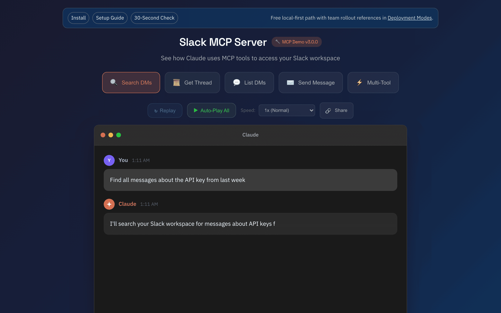

Static Proof
Product surface in one frame. This route is stable and share-safe.

Session-based Slack MCP for Claude and MCP clients. Local-first `stdio`/`web` workflows stay stable in v3, with secure-default hosted HTTP.
Product surface in one frame. This route is stable and share-safe.

Short mobile-first clip plus direct migration/ops entry points.